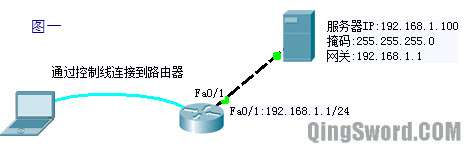
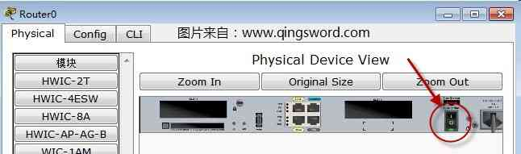

[CCNA图文笔记]-27-Cisco设备文件管理与密码恢复
引言
这篇文章前半部分介绍路由IOS文件、启动配置文件（Startup-config）的备份、还原、维护；后半部分介绍思科路由器以及交换机特权密码丢失或遗忘后如何恢复。
文章目录
- 0×1.Cisco IOS管理
- a.如何备份IOS文件
- b.如何升级IOS文件
- c.如何从备份恢复IOS文件
- 0×2.Cisco配置文件管理
- a.如何备份配置文件
- b.如何恢复配置文件
- 0×3.Cisco设备密码恢复
- a.如何恢复Cisco路由器特权密码
- b.如何恢复Cisco交换机特权密码
0×1.Cisco IOS管理
a.如何备份IOS文件
出于安全考虑我们可以对思科路由器的IOS进行备份，以便在不小心删除IOS文件或其他意外情况时，能够很快的恢复；下面看一个实例：
上图（图1）中，笔记本用控制线连接到了路由器的console接口（在"Cisco Packet Tracer"模拟器中使用线缆中那条天蓝色的控制线连接计算机的"RS 232"到路由器的Console接口，然后点击计算机，选择Desktop选项卡中的terminal，点击OK即可，如果大家想模拟的真实一些可以参考[[CCNA图文笔记]-12-配置文件备份与还原]中的内容，使用GNS3+vmware运行的服务器来完成这个实验），路由器的以太网接口fa0/1连接了一台服务器，服务器在"Cisco Packet Tracer"模拟器"终端设备"中可以找到，请根据前面学习到的知识配置好路由器接口IP和服务器IP，服务器网关指向路由器的fa0/1接口，可以在服务器的配置界面"services"选项中找到TFTP服务，将里面的文件全部删除，这样当路由器的ios备份上来后，这个列表就会多出一个ios文件，说明操作是成功的，各设备IP如图所示，下面演示通过笔记本控制路由器使用TFTP将路由器的IOS文件备份到服务器上：
/*连接上R1的console后首先查看一下Flash中都有哪些文件*/ R1#show flash: System flash directory: File Length Name/status /*下面这个.bin后缀的文件就是我们要备份的IOS，根据你选择的路由器的不同，这个文件名称也会有所不同，复制这个名称，等会要用到*/ 3 50938004 c2800nm-advipservicesk9-mz.124-15.T1.bin 2 28282 sigdef-category.xml 1 227537 sigdef-default.xml /*使用copy命令将flash中的文件备份到tftp服务器*/ R1#copy flash tftp /*输入Flash中你要备份的文件名，粘贴刚才复制的ios文件名*/ Source filename []? c2800nm-advipservicesk9-mz.124-15.T1.bin /*输入TFTP服务器的IP地址，即TFTP服务器地址，确保服务器与本路由是可以正常通信的*/ Address or name of remote host []? 192.168.1.100 /*这一步可以自己输入一个备份名，回车就直接用IOS原名*/ Destination filename [c2800nm-advipservicesk9-mz.124-15.T1.bin]? Writing c2800nm-advipservicesk9-mz.124-15.T1.bin... !!!!!!!!!!!!!!!!!!!! /*备份开始,省略很多感叹号*/ [OK - 50938004 bytes] /*备份成功*/ 50938004 bytes copied in 30.561 secs (1666000 bytes/sec)
b.如何升级IOS文件
当路由器的IOS有了新的版本，可以通过下面的命令来升级，升级前可以使用show flash来查看一下flash空间大小，看看是否可容纳新的IOS文件。
仍然使用图1作为实验拓扑：
/*从TFTP服务器上拷贝文件到Flash*/ R1#copy tftp flash /*输入TFTP服务器的IP*/ Address or name of remote host []? 192.168.1.100 /*输入TFTP上的新IOS文件名*/ Source filename []? c2800nm-advipservicesk9-mz.124-15.T1.bin /*输入存放到路由器Flash中使用的名称，默认回车即可*/ Destination filename [c2800nm-advipservicesk9-mz.124-15.T1.bin]? /* * 路由提示，是否在拷贝新的IOS前删除旧的IOS， * 如果按回车则会删除旧的IOS。 */ Erase flash: before copying? [confirm] Erasing the flash filesystem will remove all files! Continue? [confirm] Erasing device... eee ...erased /*删除中*/ Erase of flash: complete /*删除完成后开始拷贝新IOS*/ Accessing tftp://192.168.1.100/c2800nm-advipservicesk9-mz.124-15.T1.bin... Loading c2800nm-advipservicesk9-mz.124-15.T1.bin from 192.168.1.100: !!!!!!!!!!!!!!!!!!!!! [OK - 50938004 bytes] /*如果Flash中有多个IOS，可以使用下面的命令让这个新的IOS开机引导*/ R1(config)#boot system flash flash:c2800nm-advipservicesk9-mz.124-15.T1.bin
c.如何从备份恢复IOS文件
如果IOS文件被不小心删除，或者在升级IOS的过程中突然断电，则可能造成路由器IOS文件的丢失，路由不能正常启动，在图1中，假设服务器上备份好了路由器的IOS文件，这里手动删除路由器的IOS来模拟IOS丢失的情况：
/*删除Flash中的IOS文件*/ R1#delete flash:c2800nm-advipservicesk9-mz.124-15.T1.bin Delete filename [c2800nm-advipservicesk9-mz.124-15.T1.bin]? Delete flash:/c2800nm-advipservicesk9-mz.124-15.T1.bin? [confirm] /*删除后重启路由*/ R1#reload Proceed with reload? [confirm] /*回车*/ /*重启后发现路由进入了rommon模式*/ rommon 1 >
因为IOS文件被删除，路由器进入了ROM monitor模式，在这个模式下配置下面的信息：
/*设置路由器的临时IP，只要和TFTP服务器在同一网段就可以了*/ rommon 1 > IP_ADDRESS=192.168.1.1 /*设置子网掩码*/ rommon 2 > IP_SUBNET_MASK=255.255.255.0 /*设置网关，由此可见IOS文件的恢复支持跨网段进行*/ rommon 3 > DEFAULT_GATEWAY=192.168.1.1 /*设置TFTP服务器的IP地址*/ rommon 4 > TFTP_SERVER=192.168.1.100 /*设置TFTP服务器上的IOS的文件名*/ rommon 5 > TFTP_FILE=c2800nm-advipservicesk9-mz.124-15.T1.bin /*下载指定的IOS，如果超时，请看代码块末尾的问题描述*/ rommon 6 > tftpdnld /*输入y继续*/ Do you wish to continue? y/n [n]: y !!!!!!!!! /*文件传输中*/ /*传输完成后使用reset重启路由*/ rommon 7 > reset
在本例中会遇到一个小问题，按照图1将路由的fa0/1连接到服务器，使用"tftpdnld"命令发现连接不上TFTP服务器，显示超时，而将服务器连接到了路由器的fa0/0接口，再次使用"tftpdnld"命令，这一次成功的下载到了IOS，这说明，使用这种方法时，必须连接路由器接口号最小的那个以太网接口；之所以让这个问题复现出来，就是为了让大家了解这一点。
0×2.Cisco配置文件管理
a.如何备份配置文件
在本文的图1中，可以使用下面的命令将startup-config文件备份到TFTP服务器上：
/*将启动配置文件复制到tftp服务器*/ R1#copy startup-config tftp: /*TFTP服务器的IP地址*/ Address or name of remote host []? 192.168.1.100 /*startup-config保存的文件名*/ Destination filename [R1-confg]? Writing startup-config....!! /*传输中*/ [OK - 459 bytes] /*传输成功*/ 459 bytes copied in 3.073 secs (0 bytes/sec)
这种方法也能直接将running-config备份到TFTP服务器上，命令是"copy running-config tftp:"。
b.如何恢复配置文件
/*从TFTP恢复启动配置文件*/ R1#copy tftp startup-config /*TFTP服务器IP*/ Address or name of remote host []? 192.168.1.100 /*以前备份的启动配置文件的名称，注意大小写要正确*/ Source filename []? R1-confg Destination filename [startup-config]? Accessing tftp://192.168.1.100/R1-confg... Loading R1-confg from 192.168.1.100: ! [OK - 459 bytes] /*恢复成功*/ 459 bytes copied in 0.031 secs (14806 bytes/sec)
0×3.Cisco设备密码恢复
a.如何恢复Cisco路由器特权密码
有时候我们可能配置了路由器的特权密码，但是后来忘记了，导致无法进入路由的特权模式：
/*读者可以在"Cisco Packet Tracer"模拟器中手动"enable secret"配置一个特权密码来模拟忘记密码的情况*/ R1>en Router#conf t Router(config)#host R1 R1(config)#enable secret 123 R1(config)#end R1#write /*将运行配置文件写入开机配置文件*/ R1#exit R1>en Password: Password: Password: /*假装无法进入特权模式*/ % Bad secrets /*使用下面的命令查看一下路由信息*/ R1>show version .... /* * 在信息的最后出现下面这样的信息， * 其中的0x2102表示路由启动时加载启动配置文件startup-config， * 0x2142表示启动时不加载启动配置文件， * 一般路由器都是启动加载配置文件， */ Configuration register is 0x2102
现在我们要将配置寄存器的这个值改成0x2142让路由器启动不加载启动配置文件，从而达到绕过特权密码的目的，密码恢复实际操作：
首先使用控制线连接到路由的console端口，然后使用电源开关关闭路由器的电源（模拟器中，在路由器配置界面可以看到下面这张图中的电源开关按钮，鼠标点击切换开关状态），再次打开路由电源，在路由启动的60秒内，切换到计算机的console界面，按计算机键盘上的"Ctrl+Break"键，进入ROM monitor模式：
Self decompressing the image : ################## /*路由正在启动，这时候可以按键盘的"Ctrl+Break"*/ monitor: command "boot" aborted due to user interrupt /* * 进入了ROMMON模式, * 使用下面的命令更改启动时不加载startup-config文件 */ rommon 1 > confreg 0x2142 /*更改完成后重启*/ rommon 1 > reset /*输入no回车*/ --- System Configuration Dialog --- Continue with configuration dialog? [yes/no]: no /*路由没有加载startup-config文件,直接可以进入特权模式*/ Router>en /*这时候再将startup-config复制到running-config，而我们已经在特权模式下了，将启动配置文件拷贝到运行配置文件后，可以直接覆盖以前配置的特权密码，这一步一定不要错误的将运行配置文件覆盖启动配置文件，否则路由器所有启动配置数据都会丢失*/ Router#copy startup-config running-config Destination filename [running-config]? /*回车*/ /*复制成功后发现路由器名称变成以前配置的名字*/ R1#conf t /*更改特权密码为www.qingsword.com*/ R1(config)#enable secret www.qingsword.com /*将配置寄存器的值重新改成开机加载startup-config*/ R1(config)#config-register 0x2102 R1(config)#exit /*保存修改到startup-config*/ R1#copy running-config startup-config Destination filename [startup-config]? Building configuration... [OK]
恢复路由器特权密码成功。
b.如何恢复Cisco交换机密码
首先使用控制线连接到交换机的console端口，断电重启交换机，在启动过程中按住交换机面板上的MODE按键大约10秒左右，然后会出现下面这样的命令行模式（这一部分模拟器无法完成，大家了解一下，在实际环境中碰到了再用吧）：
/*首先输入下面两条命令*/ switch: flash_init switch: load_helper /* * 交换机的启动配置文件是保存在Flash中的一个叫做config.text文件， * 可以使用下面的命令查看。 */ switch: dir flash: Directory of flash:/ 7 -rwx 1900 <date> config.text /* * 将这个文件重命名,当交换机启动的时候， * 没有在闪存中找到config.text则无法加载特权密码等配置信息。 */ switch: rename flash:config.text flash:config.bk /*重启交换机*/ switch: boot /*输入no回车*/ --- System Configuration Dialog --- Continue with configuration dialog? [yes/no]: no /*直接可以进入特权模式*/ Switch>en /*将闪存中的配置文件名称更改回来*/ Switch#rename flash:config.bk flash:config.text Destination filename [config.text]? /*回车*/ /*加载config.text中的配置信息*/ Switch#copy startup-config running-config Destination filename [running-config]? /*回车*/ /*更改特权密码为www.qingsword.com*/ SW1#conf t SW1(config)#enable secret www.qingsword.com SW1(config)#exit /*保存修改到startup-config*/ SW1#copy running-config startup-config Destination filename [startup-config]? Building configuration... [OK]
交换机的特权密码恢复成功。